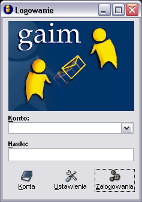
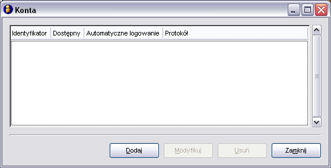
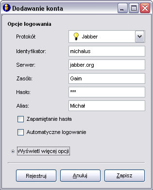
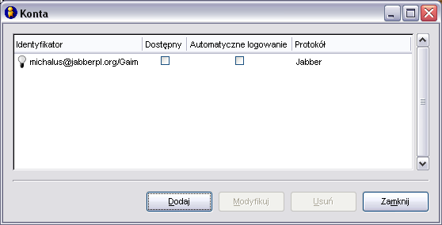
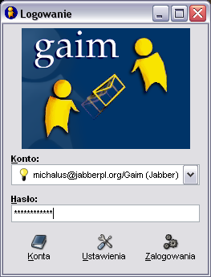
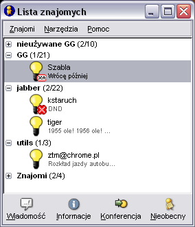
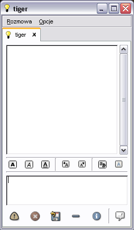
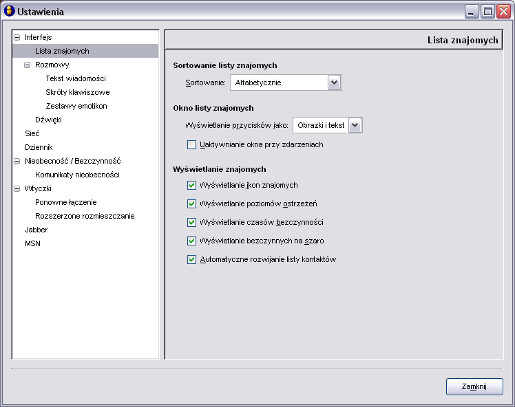
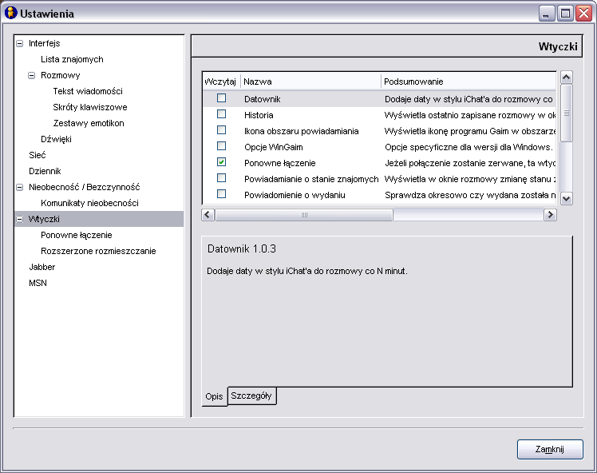
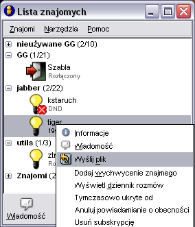

Poni¿ej znajduj± siê zrzuty ekranów, które zobaczysz tu¿ po instalacji Gaima. W przysz³o¶ci pojawi siê prawdopodobnie tutaj jaki¶ opis, dla tych którzy maj± problem w jego konfiguracji.
Powrót do Jabber FAQ
Skok do strony domowej komunikatora Gaim









